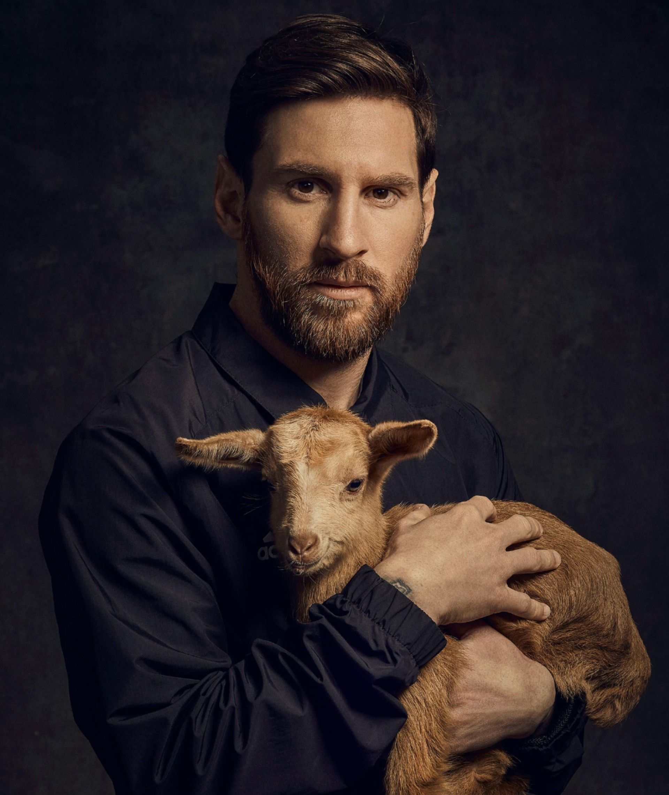
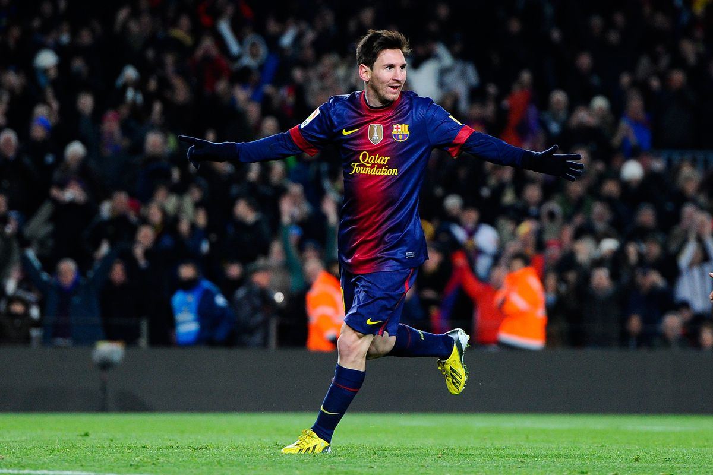
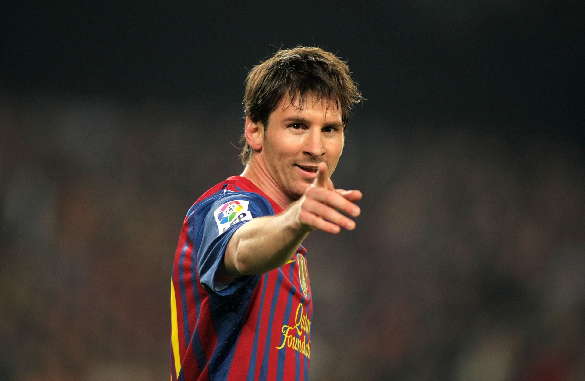
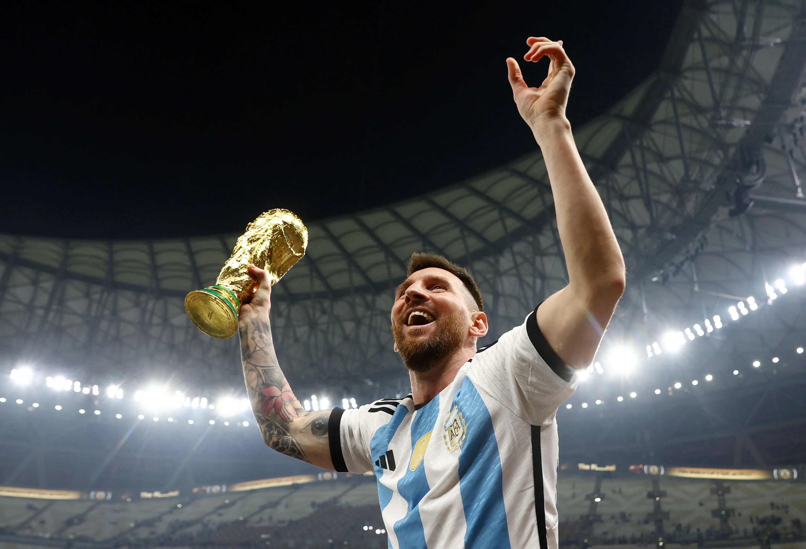
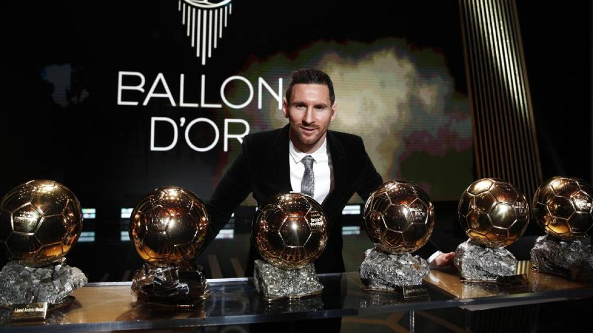

Estadisticas de Lionel Messi
- Máximo goleador histórico del FC Barcelona: 672 goles en 778 partidos (2004-2021)
- Máximo goleador histórico de La Liga: 474 goles en 520 partidos (2004-2021)
- Máximo goleador histórico de la selección argentina: 79 goles en 156 partidos (2005-2021)
- Máximo goleador histórico en una sola temporada de las principales ligas europeas: 50 goles en La Liga (2011-2012)
- Máximo goleador histórico en una sola temporada de las cinco grandes ligas europeas: 73 goles en todas las competiciones (2011-2012)
- Ganador del Balón de Oro (mejor jugador del mundo) en 7 ocasiones: 2009, 2010, 2011, 2012, 2015, 2019 y 2021

10 Ligas de España: 2004-05, 2005-06, 2008-09, 2009-10, 2010-11, 2012-13, 2014-15, 2015-16, 2017-18, 2018-19
7 Copas del Rey: 2008-09, 2011-12, 2014-15, 2015-16, 2016-17, 2017-18, 2020-21
4 Ligas de Campeones de la UEFA: 2005-06, 2008-09, 2010-11, 2014-15
3 Supercopas de Europa: 2009, 2011, 2015
3 Mundiales de Clubes: 2009, 2011, 2015
Trofeos con el FC Barcelona

Trofeos con la selección argentina:
- Campeón de la Copa del Mundo de la FIFA: 2022
- Copa América: 2021
- Medalla de oro en los Juegos Olímpicos de Beijing 2008
- Subcampeón de la Copa del Mundo de la FIFA: 2014

Trofeos individuales:
- Bota de Oro de la UEFA (máximo goleador de las ligas europeas) en 7 ocasiones: 2009, 2010, 2011, 2012, 2015, 2019, 2021
- Pichichi de La Liga (máximo goleador de La Liga) en 8 ocasiones: 2009-10, 2011-12, 2012-13, 2016-17, 2017-18, 2018-19, 2020-21, 2021-22
- Jugador del Año de la UEFA en 3 ocasiones: 2009, 2011, 2015
- Mejor jugador del Mundial de Clubes de la FIFA en 3 ocasiones: 2009, 2011, 2015
- Máximo asistente histórico de la Liga de España: 190 asistencias (2004-2021)